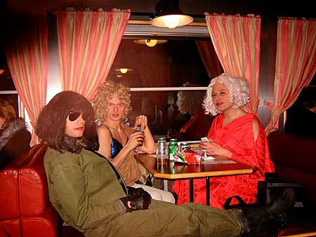
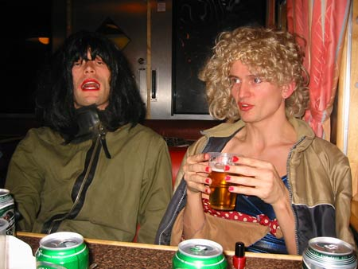
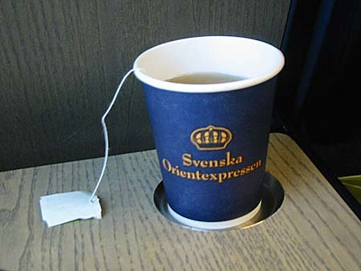
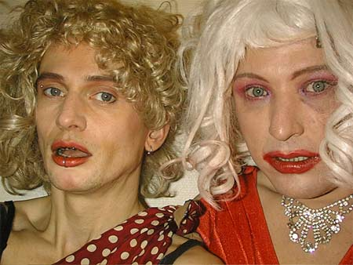

Skiing hollyday in Sweeden.
Day 1 of 4
09/01 - 2003.

Puta, Dennis Agerblad & Ramona in the train to Åre in Sweeden.

Puta & Dennis Agerblad in the train to Åre in Sweeden.

A cup of the.

Dennis Agerblad & Ramona Macho.
Dennis Agerblad.